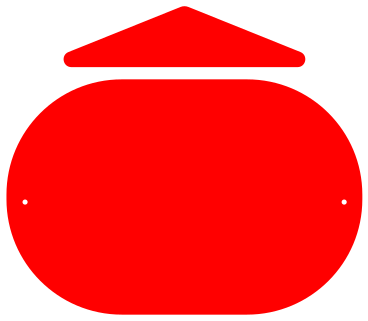
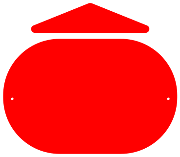

팔림프세스트는 고대 두루마리, 문서 등을 일부러 지우거나 훼손하면서
새로운 내용을 덧씌우는 고대의 필사 기술이다. 도시는 이처럼 역사적 층위가
중첩되어 현재의 도시 경관에 반영된다. 과거의 흔적이 완전히 지워지지 않고
남아, 새로운 시대의 요소와 공존하며 도시의 정체성을 형성하는 과정을
의미한다. 대표적인 예시로는 로마, 아테네, 예루살렘 등이 있으며, 이러한
도시들은 고대 유적과 현대 건축물이 공존하며 시간의 흐름을 보여준다.


 


도시 — 살아있는 팔림프세스트
The city — a living palimpsest.